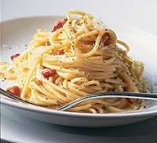

|  |
- Salt
- 2 large eggs and 2 large yolks, room temperature
- 1 ounce (about ⅓ packed cup) grated pecorino Romano, plus additional for serving
- 1 ounce (about ⅓ packed cup) grated Parmesan
- Coarsely ground black pepper
- 1 tablespoon olive oil
- 3½ ounces of slab guanciale (see recipe), pancetta or bacon, sliced into pieces about ¼ inch thick by ⅓ inch square
- 12 ounces spaghetti (about ¾ box)
|